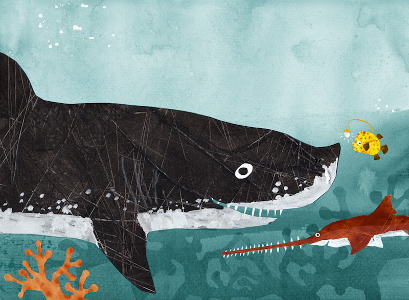

Funzel, Reisszahn und Säge
Die abenteuerliche Reise zum Leuchtblumenfeld

Ein Unterwasserabenteuer für Kinder von 5 bis 7 Jahren: Die
Geschichte dreier Fische, die unterschiedlicher nicht sein könnten –
und trotzdem die allerbesten Freunde sind. Ein Buch über
Freundschaft, Mut, Hilfsbereitschaft und Algeneiscreme.
Hier weiter lesen
Erscheint demnächst im Neptun-Verlag.
Sie können das Buch per E-Mail (vor)bestellen.
Ausleben
Ein Porträt-Buch

Gedanken an den Tod und ans Sterben verschiebt man gerne auf später.
Aber was, wenn «später» jetzt ist? Menschen über 80 schauen auf ihr
Leben zurück – und wagen den Blick nach vorne.
Hier weiter lesen
Erscheint am 2. März 2020 im Christoph Merian Verlag.
Sie können das Buch per E-Mail (vor)bestellen.
Dino und Donny
Ein Abenteuer, das uns quer durch Basel führt

Was passiert eigentlich in der Nacht, wenn alle schlafen? Mit dem
Bilderbuch «Dino und Donny» tauchen wir ein in den Zauber einer
nächtlichen Parallelrealität, in der ein Dinosaurier durch die Stadt
spaziert und einem kleinen Hund hilft, seinen Weg nach Hause zu
finden.
Hier weiter lesen.
Erscheint im März 2020 im Friedrich Reinhardt Verlag.
Sie können das Buch per E-Mail (vor)bestellen.